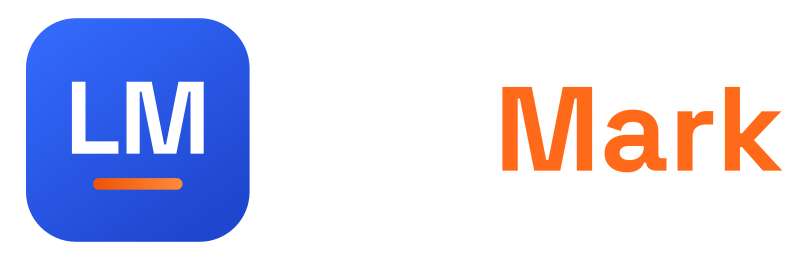
# Brand Book — v2.1 · gradient LM mark
Contents
01 — Brand at a glance
LiftMark turns strength training into something you can read, write, and own — plain-text workouts in a simple markdown format, tracked in a fast native app, generatable by any LLM.
An open specification (CC BY-SA 4.0) for writing workouts in markdown. Human-writable, machine-parseable, app-independent. This is the commons. (Formerly “LMWF”.)
The iOS app that reads LMWF: import, track sets in real time, see history, sync to Health, generate workouts with AI. This is the product.
For lifters who'd rather train than fight their tracking app. LiftMark is the workout tracker built on open, portable plain text — so your programs are never locked in, and your AI of choice can write them for you.
Technical but athletic. Precise, unfussy, and quietly confident — the feel of a good command line meets the energy of a working gym. We sound like a strong training partner who happens to be an engineer: direct, encouraging, never preachy.
No lock-in. The format belongs to everyone.
Plain text in, structured training out.
Built for the set in front of you.
Your workouts, kept in plain text.
Alternates: “Write it, then lift it.” · “Workouts that are just text.” · “Your program, your file.”
The formal name is LiftMark — “mark” doing double duty for markdown and for a personal mark you hit. The open format is LiftMark Format (formerly “LMWF”). lift.md is a fun consumer-facing styling and the ideal domain (the name is literally a markdown file) — use it for the wordmark and social wherever a lift.md domain is secured. Both share one identity — the LM mark below works for either. Spoken, it’s “LiftMark.”
02 — Voice & tone
Warm, clear, and actually helpful — like a friend who knows their way around the gym. We explain things simply, cheer you on, and skip the hype.
Friendly · clear · encouraging · helpful · down-to-earth.
Hype-y · salesy · jargon-heavy · cold · preachy.
Instead of
“🔥 CRUSH your goals with the ULTIMATE AI-powered fitness revolution!!”
Say
“Paste in a workout and start lifting — we’ll keep track for you.”
Instead of
“Our proprietary engine leverages synergistic data pipelines.”
Say
“Your workouts are just text — easy to read, and yours to keep.”
03 — Logo system
The mark is the LM monogram in Space Grotesk Bold on a blue-gradient tile, with a short orange bar beneath — a markdown rule (---) that also reads as a loaded barbell. It evolves the original LM-and-dumbbell logo: same letters, modern and flat-but-for-the-gradient, no brown.
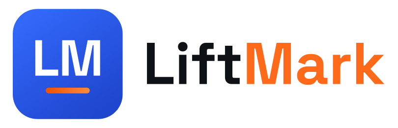
Mark + wordmark on light backgrounds.
Reversed — white wordmark on ink & photos.
Styled as lift.md — same mark, domain wordmark.
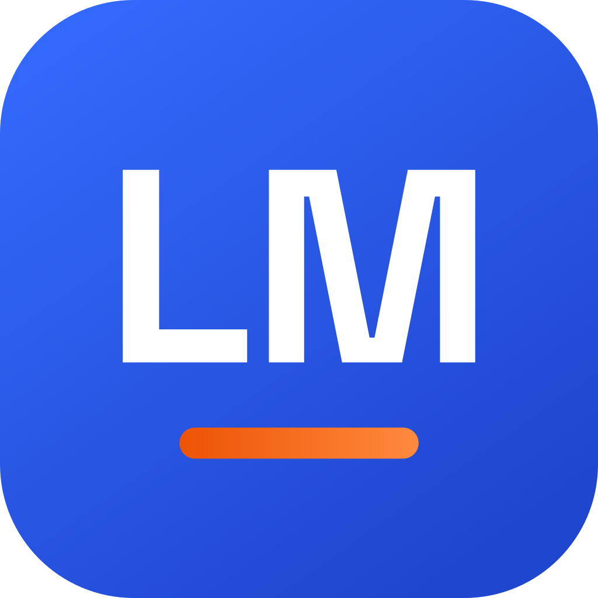
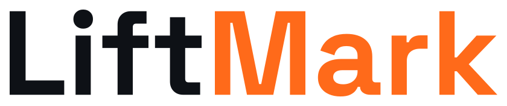
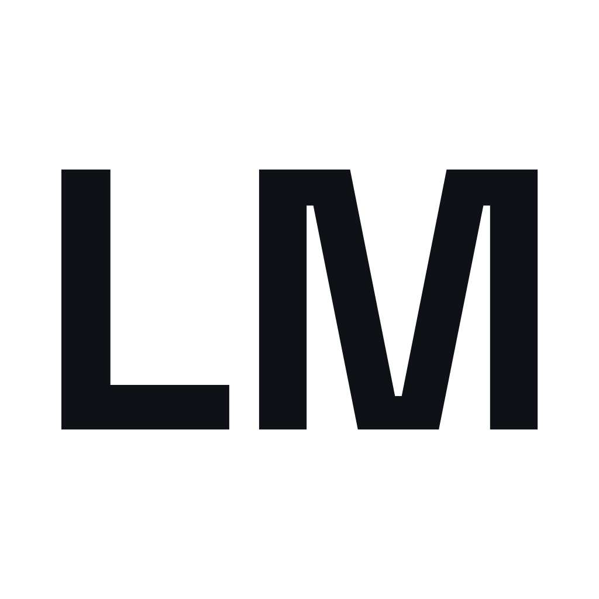
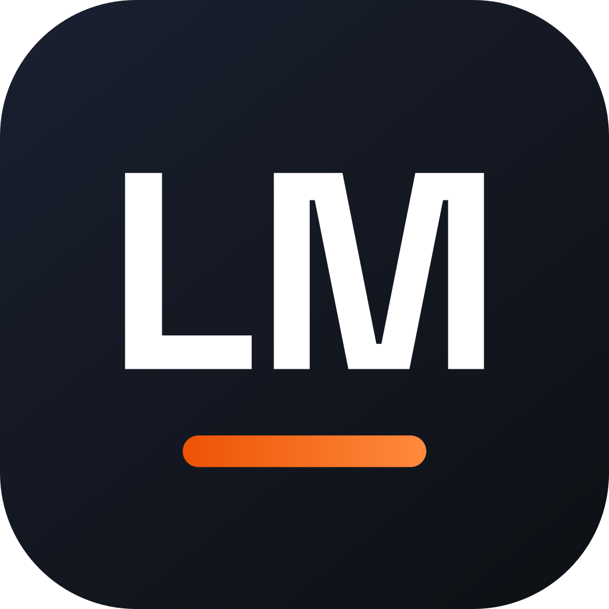
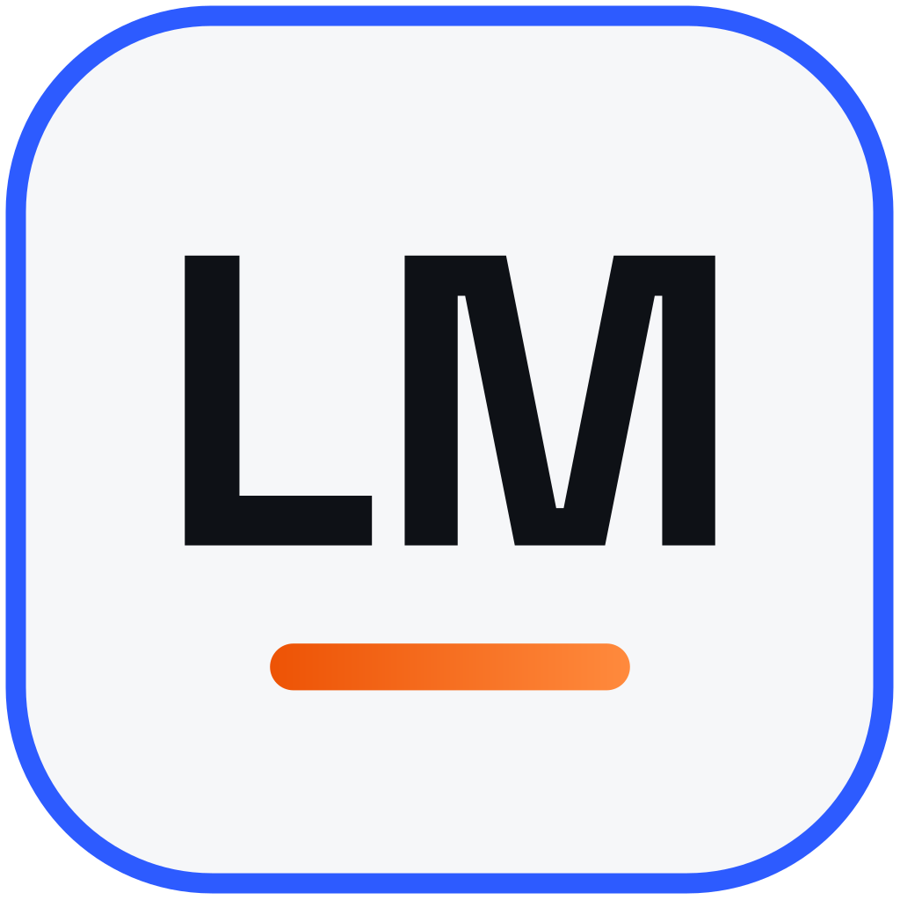
03b — Names & sub-brands
The same LM mark and type system carry every name. A light JetBrains Mono descriptor after a thin divider sets the sub-brand — so the format reads as part of the family, not a separate logo.
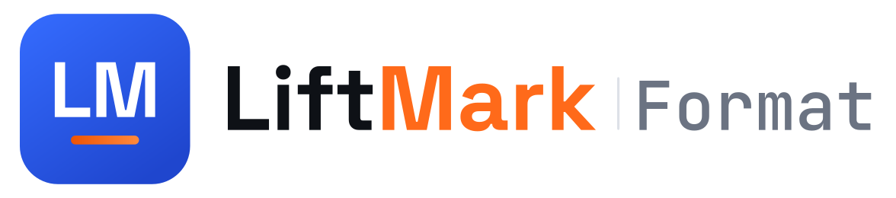
the open format (was “LMWF”)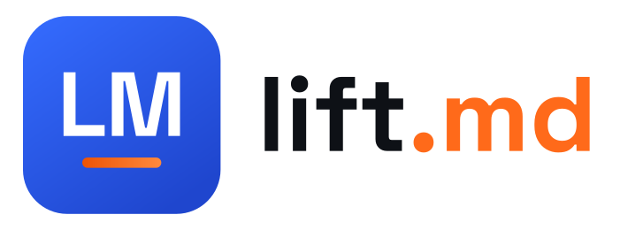
consumer styling / domain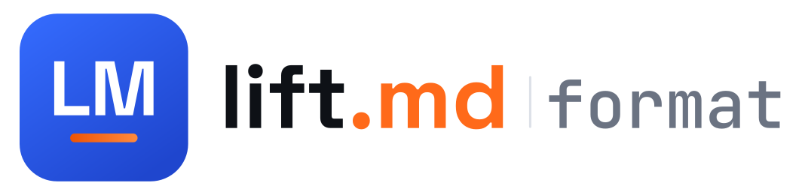
the format, styled as the domainlift.md styling wherever the domain lives. Set the descriptor in JetBrains Mono — never re-typeset it in the display face.04 — Clear space & minimum sizes
Keep clear space around the logo equal to the height of the “L” in the wordmark (or one-quarter of the icon’s height). Nothing — type, edges, other logos — enters this zone.
≥ 120 px / 32 mm wide (digital / print).
≥ 24 px. Holds down to a favicon.
Monogram alone for watch faces & badges.
05 — Logo misuse
06 — Color: brand
Blue carries trust and structure; orange carries energy and effort — discipline and output. Gradient is welcome, with one rule: never blend the two hues together. Each gradient lives inside a single colour, so nothing ever muddies into brown.
Blue tile — #356CFF → #1F46CE
Depth on the app tile & large surfaces.
Orange depth — #ED5305 → #FF8A3D
The logo bar, in-app accents, progress.
Energy — blue → magenta → orange
Thin decorative rules only (cover/footer/OG).
The Energy gradient is the one place blue and orange may travel together — routed through magenta so it never browns. Reserve it for thin decorative bars; never put it behind text or use it as a tile/fill.
✗ Blue→orange blend (muddy brown core)
✓ Blue gradient + orange-depth bar
07 — Color: full scales
Each ramp runs 50→900. 500 is the brand value. Use lighter steps for surfaces and states, darker for text and pressed states.
08 — Themes & accessibility
LiftMark ships light and dark (auto by default). Use the semantic roles — not raw hex — so surfaces flip cleanly. Tokens are in liftmark-tokens.css and LiftMarkColors.swift.
09 — Typography
All open-source (OFL) — fitting for an open project, and free to embed anywhere.
Display & headings. Geometric, a little technical. Weights 500 / 700.
Body & UI. Quiet, dependable at small sizes. 400 / 500 / 600.
Code & LMWF. The voice of the format itself. 500.
10 — Iconography
Line icons on a 24×24 grid, 2 px stroke, rounded caps and joins. Match SF Symbols’ weight so they sit naturally in iOS. Ink or muted slate by default; brand color only to signal state or action.
Avoid filled, multicolor, or skeuomorphic icons. One concept per icon; if it needs a label to read, simplify the icon.
11 — UI & components
Primary = solid blue, white label. Orange is the hero/accent action and always takes ink labels. Ghost for secondary. No gradient fills.
sm 8 · md 12 · lg 16 · xl 24 · pill 999. App tile = 22.46% of edge.
8-pt base: 4 · 8 · 12 · 16 · 24 · 32 · 48 · 64.
Soft, low shadows. Cards rest on Paper, not float.
5 exercises · ~48 min
12 — The format as brand
The LMWF syntax is a brand asset. When we show a workout, we style it consistently: ink background, mono type, headings muted, @modifiers in orange, set lines in light blue.
Use the # heading mark as a recurring graphic motif — in taglines (“# Workouts in plain text.”), section titles, and social. It signals “this is plain text” at a glance.
13 — Social & app icon
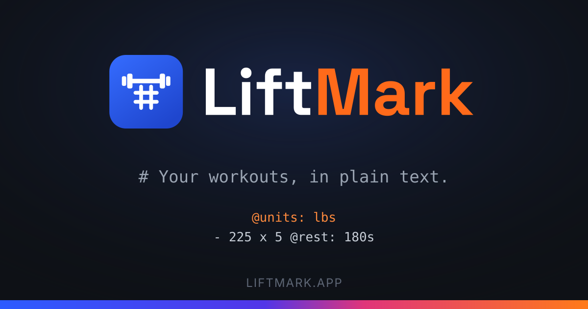
1200×630. Ink field, centered lockup, a real LiftMark Format snippet, orange-depth foot bar. og-liftmark and og-liftmd templates in assets/social/.
Blue-gradient tile, white LM, orange-depth bar. Ink and light tiles are alternates. PNG exports (1024/512/180/120) and the square App Store icon live in assets/icons/ (lm-*).
14 — Developer tokens
Everything in this book is shipped as code. Pull these into the Astro site and the iOS app so design and product never drift.
lm-*)